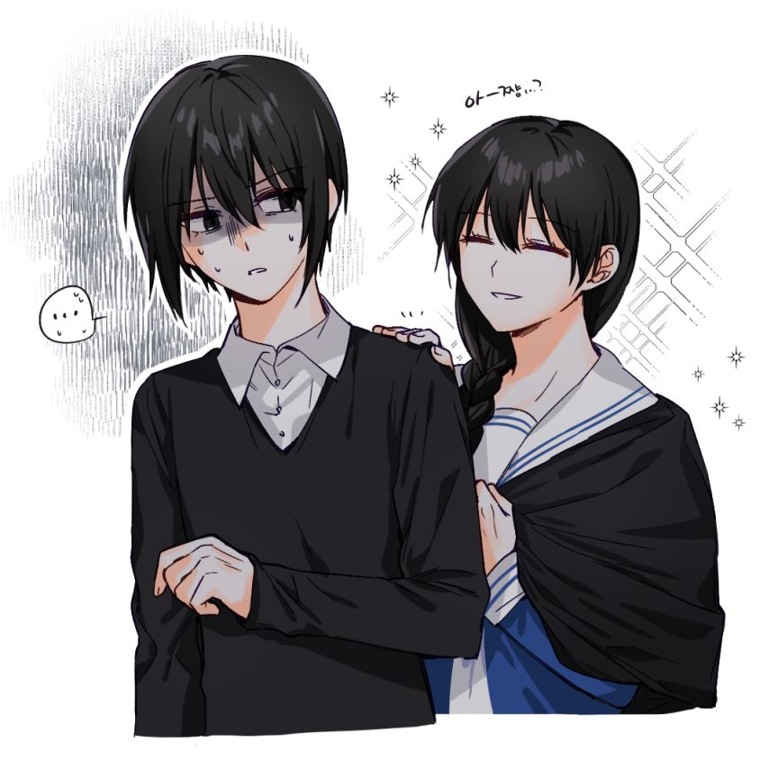
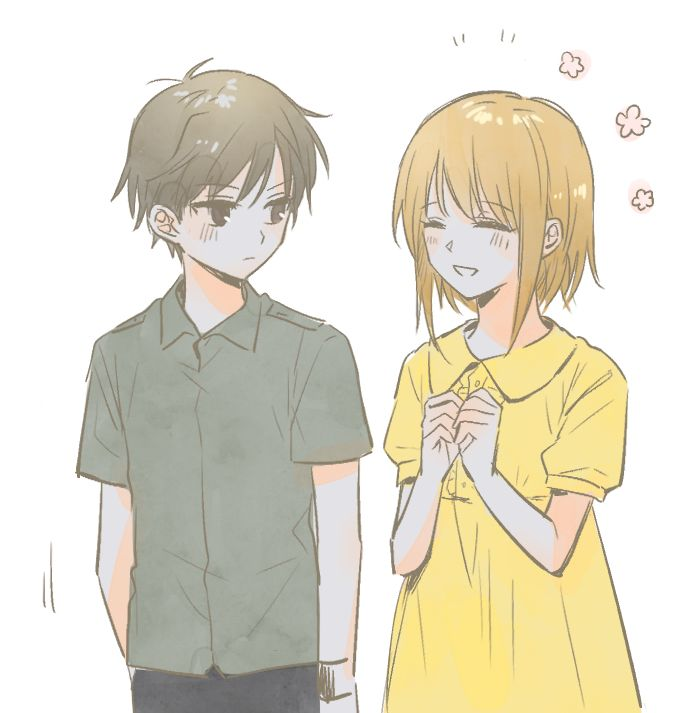
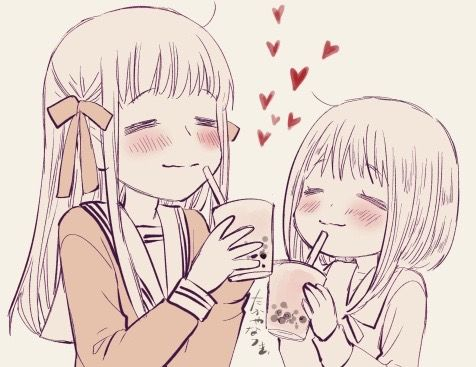

Fruits Basket ♫

I love Saki so much. Akito on the left, Saki on the right
Tohru Honda: I’m pretty much neutral to Tohru. I used to like her but she doesn’t seem to be my enjoyment anymore. She is sweet and bubbly, and cares about everyone else. I can see some people hate her because of her lack of personal security, she cares for others but doesn’t care for herself enough. Despite this, a character like Tohru appears very often in the anime. In a world where there still have conflicts and wars, one must stay strong enough for the battle (that is how I felt about how ss3 ends of the 2019 anime, although I haven’t watched it), Tohru on the other hand isn’t that much strong or active, her inability to fight back for herself is insufficient too.

Kisa on the right, Hiro on the left
Saki Hanajima: My favourite character ♡ She has an episode about her, telling about the backstory and her psychic power. Her power is about sensing waves (denpa), which means that not only the Sohmas have magic, her magic is a special kind. Despite this power, her childhood seems to be saddening to me, I can relate to her at some point. Aside from that, she has a gothic lolita style which I found appealing. She reminds me a bit about Wednesday Addams for her intimidate aura (I love Wednesday too). Lastly, she is a loyal friend! Caring for the protag Tohru. There are definitely many good traits that I like.
Something I would like to discuss is the lack of character development of Tohru as she went through. I think she is too soft and kind… That is her main weakness, she doesn’t seem to know what she wants. So season 1 and 2 are bit hard to watch, I’m uncertain for season 3 but yes I gonna skip some final episodes of season 2 to watch season 3 quickly (if I can)

Kisa on the right, Tohru on the left. They are enjoying boba together
The male characters didn’t impact me much and it has been around a year since I last watched the show. If I ever revisit it I would update this page and talk about other characters more. Kyo is too stubborn and Yuki is too charming. Shigure is scheming something with Akito which is really suspicious and I don’t like when Shigure is with Akito but they added a bit of mystery to the plot. Other female characters that I like would be Kisa and Uotani, Kisa is so sweet while Uotani is super supportive so big credit to Tohru for helping them.
The show is quite overwhelming for me to watch despite the calm vibe. I mean I would skip some of the episodes of season 2 now if I want to watch season 3. Overall the show is fine, I gave it a 7/10, if you have some thoughts about the show please let me know on my site profile, email or guestbook.